Zoologia Fantástica: Criando Espécies com IA
Nesta oficina, os estudantes serão desafiados a atuar como biólogos exploradores, criando criaturas híbridas fantásticas por meio da inteligência artificial (IA) generativa. O projeto consiste em utilizar modelos de IA para transformar descrições biológicas detalhadas (escrita de prompts) em representações visuais, classificando características de habitat, alimentação e adaptação com base em parâmetros definidos pelos próprios estudantes. A construção pode ser realizada integralmente em ambiente virtual (como Canva ou Gemini), com a possibilidade de extensão para a criação de um modelo 3D da imagem criada.
Estrutura da Oficina
Materiais
Lista de materiais/softwares/componentes necessários
Preparar
15 minApresentação
Esta aula propõe uma expedição científica digital voltada à criação de um Catálogo de Zoologia Fantástica. Com base na problematização sobre como uma IA é capaz de gerar a imagem de um animal que nunca existiu, os estudantes serão convidados a desenvolver protótipos visuais de criaturas híbridas, articulando conhecimentos de Biologia e tecnologia por meio de ferramentas de IA generativa.
Antes da aula, verifique a estabilidade da conexão com a internet e teste previamente os acessos às plataformas que serão utilizadas (como ChatGPT ou Gemini), garantindo que logins e permissões estejam funcionando adequadamente. Essa organização prévia evita perdas de tempo com dificuldades técnicas e contribui para a fluidez da condução pedagógica.
helpPerguntas reflexivas
- Como um computador "sabe" o que é um elefante se não tem olhos para ver o mundo? De onde vêm as informações que permitem à IA gerar essa imagem?
- Se a IA cometer um erro e desenhar um gato com 5 patas, como podemos ajustar o comando para corrigir o resultado usando apenas palavras?
- De que maneira as imagens que criamos aqui poderiam ser compartilhadas com biólogos de outros países de forma instantânea?
A IA generativa é um tipo de sistema computacional capaz de produzir novos conteúdos, como textos e imagens, valendo-se de padrões aprendidos em grandes volumes de dados. Diferentemente de aplicações de IA voltadas apenas à análise, classificação ou previsão, a IA generativa opera na criação, combinando informações previamente aprendidas para gerar resultados originais por meio de comandos fornecidos pelo usuário.
No contexto desta oficina, a IA será compreendida como um “assistente de laboratório” digital, isto é, uma ferramenta que executa as ideias formuladas pelos estudantes por meio de descrições textuais estruturadas (prompts). A qualidade do resultado obtido está diretamente relacionada à clareza, à organização e ao detalhamento dessas instruções.
A simulação e a geração digital constituem recursos pedagógicos relevantes, pois possibilitam testar hipóteses, visualizar possibilidades e reformular propostas sem o receio do erro. Nesse processo, o equívoco passa a ser entendido como parte do percurso investigativo, o que favorece a experimentação criativa e o desenvolvimento do pensamento computacional.
Nesta seção, a IA generativa é apresentada como:
- uma tecnologia capaz de transformar descrições textuais em representações visuais;
- um recurso que viabiliza a simulação e o teste de ideias em ambiente digital;
- uma ferramenta de mediação entre a intencionalidade humana e a produção automatizada de imagens;
- um instrumento para o desenvolvimento de habilidades relacionadas à organização lógica, ao refinamento de comandos e à análise crítica de resultados.
Para a realização da atividade, sugere-se a utilização de ferramentas como ChatGPT ou Gemini, que oferecem qualidade nas gerações e disponibilizam, em suas versões gratuitas, um número limitado de criações de imagens.
Contato inicial com a IA
Embarque
O objetivo desta etapa é fazer com que os estudantes tenham um primeiro contato intuitivo com a interface da IA e percebam na prática como a ferramenta reage aos comandos.
Passo a passo para o estudante
- Acesso: solicite aos estudantes que acessem o site gemini.google.com ou chatgpt.com e que façam login com a conta autorizada.
- O comando (input): proponha o seguinte desafio: "Usando a IA escolhida, vocês têm exatamente 3 minutos para gerar a imagem de um cachorro voando".
- Exploração livre: incentive-os a tentar uma variação do desafio inicial, a fim de que percebam como a IA responde.
- Socialização: incentive os estudantes que conseguirem um resultado curioso ou engraçado a compartilhar com os colegas.
Criar
55 minProtótipo
O Catálogo das Criaturas Híbridas
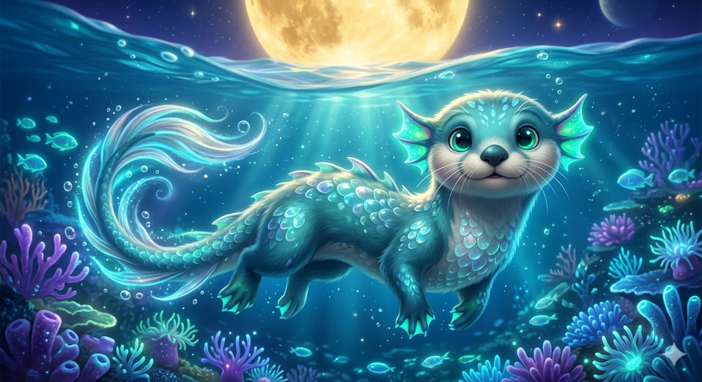
Antes de iniciar o desafio, faça uma breve contextualização. Utilize, para isso, a gamificação como estratégia de imersão. Você pode adaptar a história ao perfil da turma e incorporar referências culturais, temas locais ou conteúdos que estejam sendo trabalhados em outras disciplinas.
“Atenção, pesquisadores. Recentemente, nossas sondas espaciais detectaram uma série de ecossistemas em uma dimensão paralela. Os biomas lá desafiam a lógica: florestas de cristais que vibram com música, oceanos de mercúrio e desertos onde chove chocolate. Mas o que mais nos impressionou foram os seres vivos. Eles parecem ser “híbridos”: combinações de animais que conhecemos na Terra, mas adaptados para sobreviver nessas condições impossíveis. Infelizmente, as fotos das sondas vieram corrompidas. É aqui que vocês entram. Como biólogos de mundos imaginários, sua missão é reconstruir visualmente essas criaturas. Vocês devem ser precisos nas descrições e registrar se o animal tem pele de metal ou solta fogo pela boca, por exemplo. Preparem suas fichas de campo. O laboratório de bioengenharia digital está oficialmente aberto. Boa sorte!"

{kind=link}
Refletir
20 minAprendizados
Dinâmica de compartilhamento: "Galeria fantástica"
A dinâmica de compartilhamento "Galeria Fantástica" permite aos estudantes mostrar seus projetos uns para os outros, promovendo a socialização e a tangibilização do conhecimento. Como as ferramentas de IA seguem padrões, os projetos podem ter bases parecidas, e isso torna a comparação das diferenças ainda mais rica.
- Opção A: organize uma mostra rápida e coletiva onde cada estudante exibe apenas a imagem da sua criatura em seu computador. Apenas observando os detalhes visuais, os demais colegas devem tentar adivinhar quais animais foram fundidos e qual foi o habitat escolhido. Após os palpites, o autor revela o prompt (comando) utilizado. O foco aqui é comentar como palavras específicas (adjetivos de textura, iluminação ou estilo) influenciaram o resultado. Incentive os estudantes a caminhar pela sala e ver outros trabalhos.
- Opção B: o professor deve disponibilizar um link para um mural digital (Padlet) em que cada estudante fará o upload da imagem gerada por IA. Abaixo da imagem, deve ser registrada a história produzida sobre um dia na vida do animal. Ao salvar e nomear as imagens corretamente no mural, os estudantes aplicam o conceito de metadados e entendem como a organização ajuda a localizar informações em um servidor. Após a postagem, a turma deve navegar pelo mural do Padlet e tentar identificar, no projeto de um colega, qual foi o adjetivo ou comando que gerou o detalhe que mais chama a atenção na imagem.
helpPerguntas reflexivas
- A quem podemos atribuir a autoria da imagem: à pessoa que escreveu o comando ou ao sistema que gerou a imagem?
- O que aconteceu quando a IA não entendeu o comando que você forneceu? Como você ajustou o prompt para melhorar o resultado?
- Sua criatura fantástica está bem adaptada ao habitat em que ela vive? Qual princípio da biologia terrestre você precisou “quebrar” para que ela sobrevivesse no ambiente criado?
tips_and_updatesDicas de condução
Para ir além
30 minPara ampliar a experiência, proponha aos estudantes um desdobramento tridimensional da criatura criada. Questione como o animal, inicialmente representado em 2D, poderia ser visualizado em 3D e explore a possibilidade de transformar a imagem gerada em um modelo tridimensional.
Apresente a ferramenta MakerWorld (makerworld.com/pt/makerlab) e explique aos estudantes que ela gera modelos 3D com base em imagens. Oriente-os de que a criação de contas deve ser realizada conforme as diretrizes da escola, preferencialmente utilizando um e-mail Google para facilitar o acesso. Ao realizar o login, solicite aos estudantes que concordem com os Termos de Uso.
Passo a passo
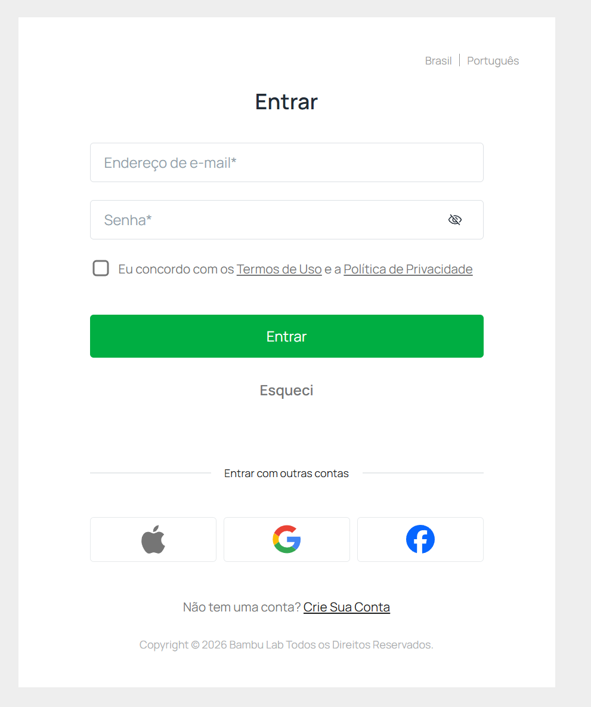
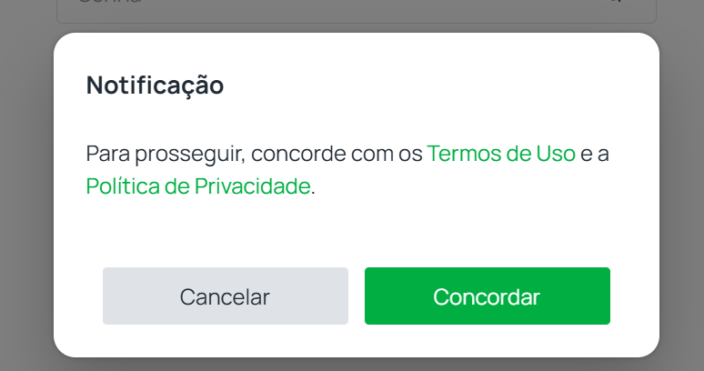
Ao finalizar o login, os estudantes poderão inserir nome, nome do usuário, nível de habilidade em impressão 3D, além das categorias preferidas. Peça-lhes que cliquem em “Next” até chegarem à tela de criação.
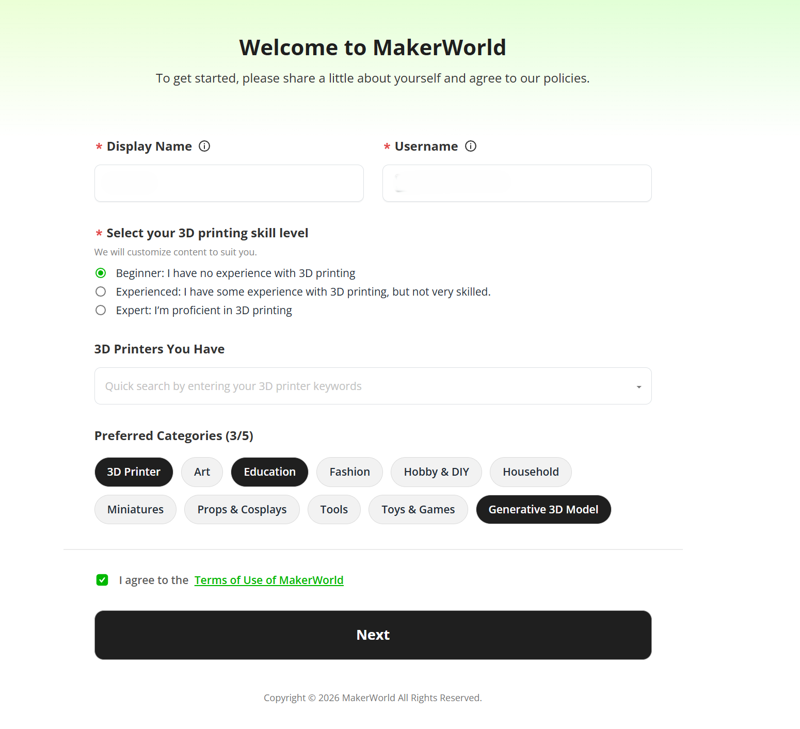
Nessa tela, solicite a eles que procurem pelo recurso “Imagem para modelo 3D”.
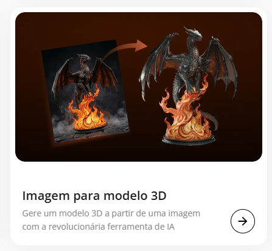
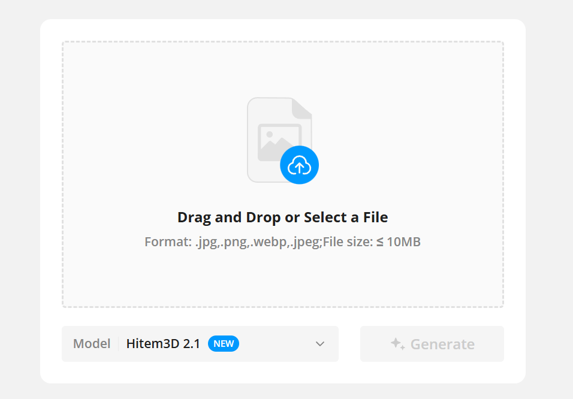
Em “Model”, são oferecidas algumas opções de modelos generativos de parceiros do MakerWorld, que podem variar com o passar do tempo. Para o escopo desta atividade, recomenda-se priorizar modelos que ofereçam boa qualidade visual, como Tripo AI 3.1 e Hitem3D 2.1.
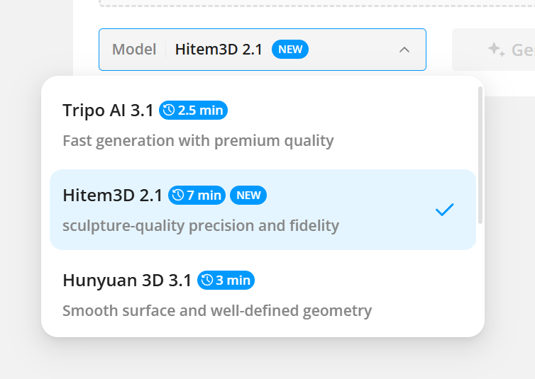
Para ajudar o modelo de IA a classificar melhor as informações, sugira aos estudantes que criem uma imagem do animal com o fundo branco, de modo que apenas a criatura apareça em destaque, sem outros elementos.
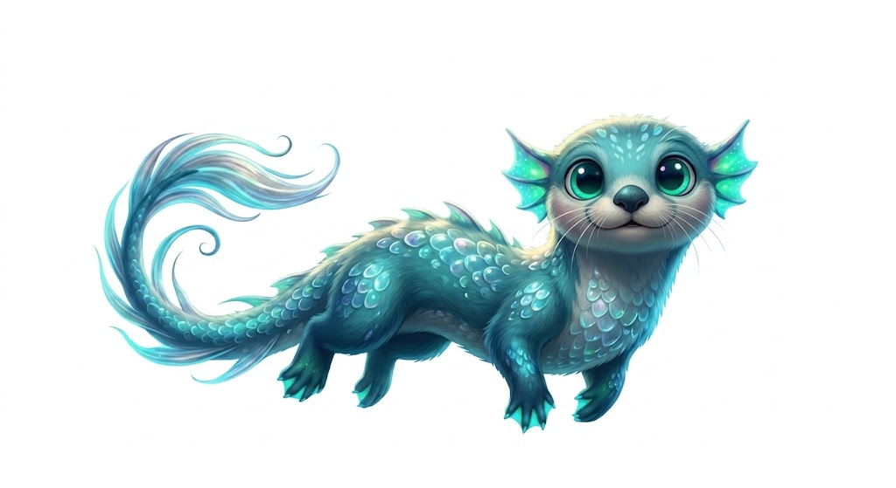
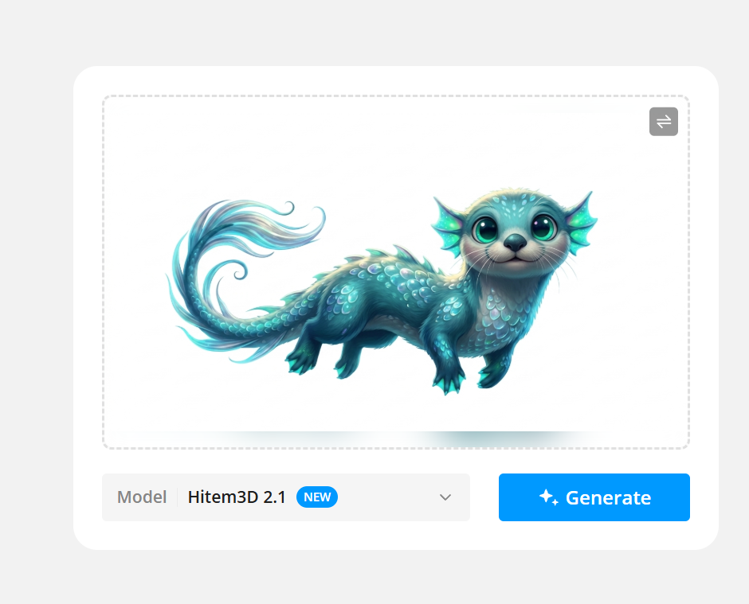
Oriente-os a anexar a imagem ao site e, em seguida, selecionar “Generate”. O processo será iniciado e, dependendo do modelo escolhido, durará de 3 a 7 minutos em média. Aproveite esse intervalo para conversar com os estudantes sobre a ferramenta e investigue se eles já a conheciam, como imaginam que ela funciona e o que acreditam que ela poderá realizar no futuro.
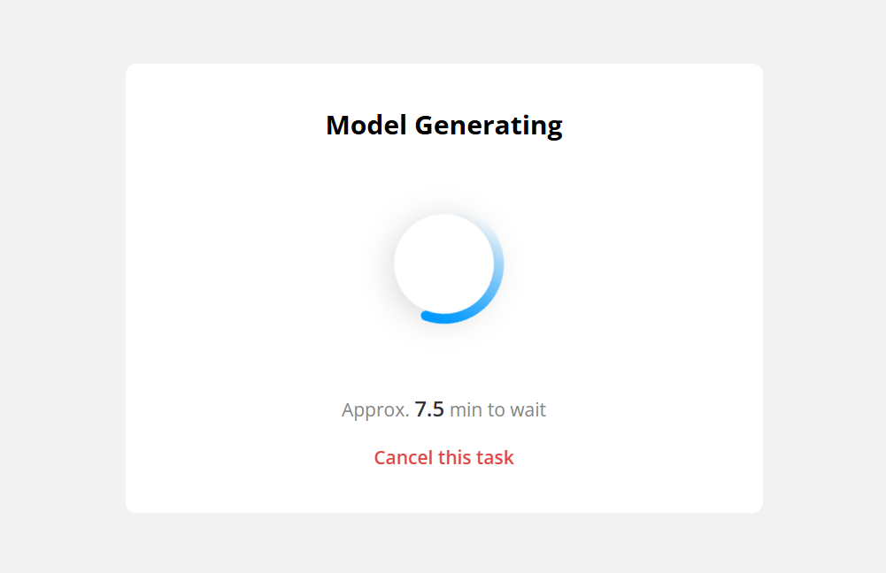
Após a geração, é possível interagir com o modelo 3D por meio do botão esquerdo do mouse e analisá-lo por todos os ângulos.
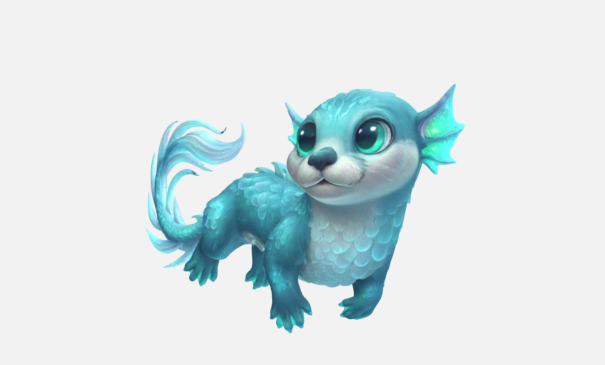
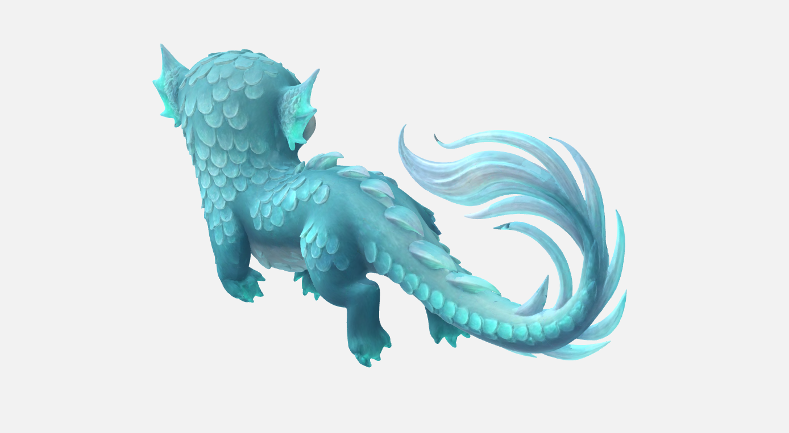
Após explorar o modelo, solicite aos estudantes que cliquem em “Export”, no canto superior direito da interface, e, na tela seguinte, em “Confirm”. Em seguida, caso a escola disponha de uma impressora 3D, oriente-os a inserir as configurações do equipamento. Após essa etapa, o download do modelo será habilitado.
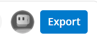
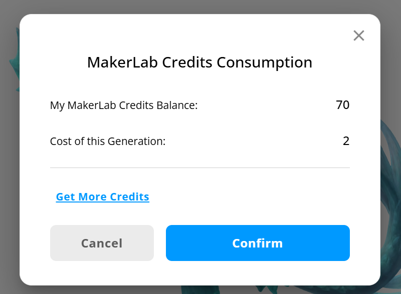
A exportação será habilitada em 3 formatos distintos: STL e 3MF, destinados à impressão 3D, e GLB, utilizado para a exibição em navegadores de internet.
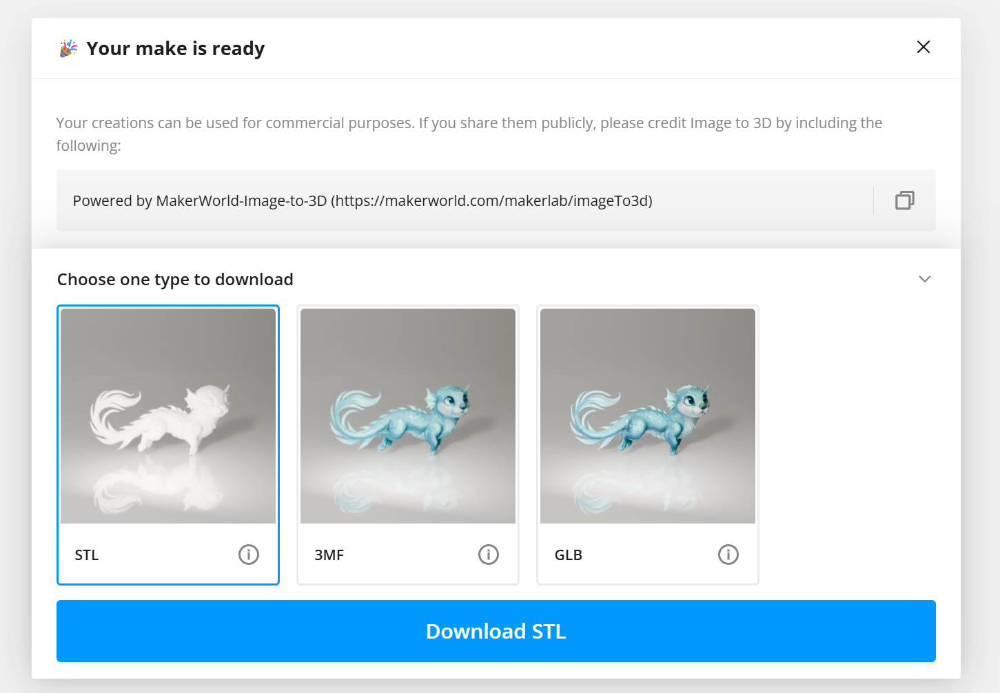